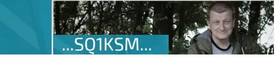

Inne strony:

Polecamy również:
~ Oddział Terenowy PZK nr14 ~
~SP DX Club~
~Program zamkowy~
~Polskie Gminy Award -PGA~
~SP Powiat Award~
~Klub Radiowideografii PK RVG~
~Stowarzyszenie Miłośników łączności na falach krótkich~
~Jak zrobić QSL-kartę